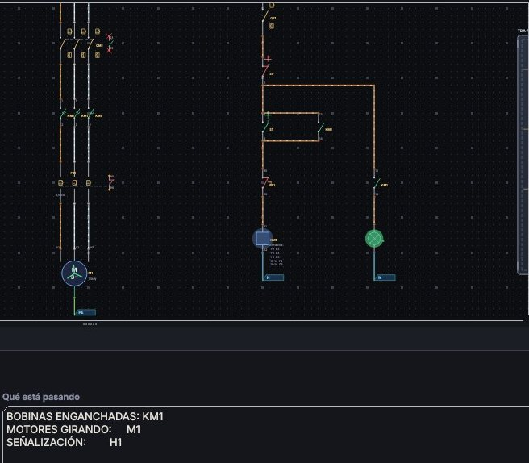
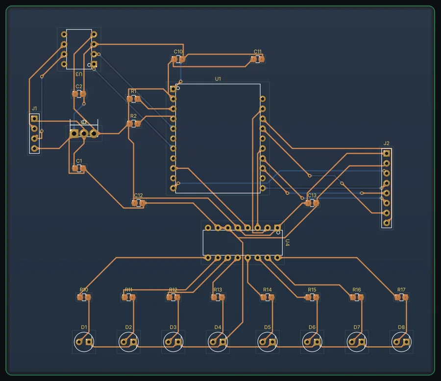

Cobre
Cada pista es una decisión
Ancho, capa, separación, impedancia. ElectronArt las respeta mientras ruteás, no cuando ya es tarde.
Beta abierta · Precio de fundador hasta el 31/12
Dibujás el esquema de mando con símbolos IEC 60617. Apretás marcha en la pantalla. El contactor engancha, el motor arranca y el térmico dispara si lo sobrecargás. El mismo programa hace la placa: esquemático, SPICE, PCB y Gerber.

El reel sale de una simulación que corrió de verdad. La placa es un archivo real, abierto en ElectronArt.

Más en Instagram: @electronart.eda
Cobre
Ancho, capa, separación, impedancia. ElectronArt las respeta mientras ruteás, no cuando ya es tarde.
Vías
El autoruteo pone la vía donde hace falta y no donde no: un pad pasante ya cruza la placa, y ahí no va ninguna.
Componentes
Más de cien encapsulados con las medidas del fabricante, y el modo caricatura para cuando lo que importa es entender.
Fabricación
Gerber con arcos reales, taladros, Pick & Place, BOM, IPC-2581 y ODB++. Sin sorpresas.
Le pedís lo que necesitás en castellano. Te contesta, dibuja lo que va a hacer sobre tu diseño, y sólo lo aplica si vos aceptás. Corre en tu máquina o con tu propia clave de IA.
Lo que agrega se dibuja en oro sobre el diseño, lo que saca aparece tachado y lo que mueve muestra su recorrido. Nada toca tu proyecto hasta que apretás Aplicar.
Cada cambio va en una lista con su tilde. Destildás uno y desaparece del dibujo al instante. Se aplica sólo lo que dejaste marcado, y entra como un solo Ctrl+Z.
Podés usarlo con tu propia clave, o contra un modelo local: ahí el diseño no sale de tu computadora. Para trabajo bajo acuerdo de confidencialidad, esa diferencia lo es todo.
Trabaja en los cuatro editores: coloca y conecta componentes en el esquemático, rutea y vierte cobre en la placa, corre simulaciones y arma la lógica del Ladder. Vos aceptás cada cambio antes de que toque tu proyecto.
Esquemático, placa, simulación y documentación comparten un mismo proyecto y se mantienen sincronizados.
137 símbolos en estilos ANSI, IEC y educativo, buses, hojas jerárquicas, numeración de conductores IEC, cross-probing con la placa y anotación automática de referencias.
Ruteo interactivo a 45°/90°/arcos, pares diferenciales, serpentinas de igualación, planos de cobre y teardrops. Autorouter con estrategia, grilla y costos ajustables, dos caras y vías puestas por conectividad.
DC, transitorio y AC con modelos no lineales reales (diodo exponencial, BJT Ebers-Moll, MOSFET nivel 1, SCR/Triac con enganche), barridos, Monte Carlo, Fourier/THD y banco con osciloscopio.
Paquete completo en un clic: Gerber RS-274X con arcos G02/G03 reales, Excellon, Pick & Place, BOM con stock en vivo, PDF, IPC-2581 y ODB++, listo para cualquier fábrica de PCB.
Importa KiCad, EAGLE, Gerber multicapa, IPC-2581 y ODB++; exporta STEP 3D con color, DXF y bibliotecas KiCad. Sus proyectos nunca quedan encerrados en un formato.
Reglas por clase de red (clearance, ancho, anillo anular, borde, taladros, pares diferenciales) con panel de violaciones navegable, y verificación eléctrica del esquemático.
Catálogo curado de más de 150 partes verificadas, stock LCSC en vivo, importación de su CAD real y un motor que interpreta datasheets en PDF para crear el símbolo exacto.
Símbolos IEC de potencia y maniobra, contactores con referencias cruzadas, editor Ladder con simulación en vivo y co-simulación de microcontroladores AVR en el esquemático.
Visor OpenGL integrado, no una exportación: cuerpos por encapsulado, cobre y máscara reales, sombreado ambiental horneado, LED translúcidos y render 4K para presentar el proyecto. También exporta STEP con color.
El mismo circuito, dibujado como en un libro de electrónica: cada componente de la biblioteca tiene su ilustración reconocible. Para enseñar, documentar o entender de un vistazo qué hace la placa.
Abrí el esquemático y el PCB en el browser —o en una tablet del mismo wifi, protegida con token— y vas viendo cómo se actualizan mientras editás, con botones para refrescar, repour y DRC.
Niveles de detalle al alejar, ancho mínimo de pista en pantalla (las pistas nunca desaparecen), antialias que se aparta durante el paneo e índice espacial que hace el DRC cientos de veces más rápido en placas de miles de pistas.
Colocá componentes y cableá tu circuito.
Verificá el comportamiento con SPICE y ERC.
Sincronizá a PCB, ruteá el cobre y corré el DRC.
Exportá Gerber, taladros, Pick&Place y BOM.
Lo esencial de las grandes suites, sin la complejidad ni el precio.
| Función | ElectronArt | Altium | Eagle | Proteus | EasyEDA | Flux |
|---|---|---|---|---|---|---|
| Asistente de IA que dibuja el cambio sobre el diseño antes de aplicarlo | ✓ | ✗ | ✗ | ✗ | ✗ | ~ |
| El asistente puede correr en tu máquina, sin subir el diseño | ✓ | ✗ | ✗ | ✗ | ✗ | ✗ |
| Esquemático + PCB | ✓ | ✓ | ✓ | ✓ | ✓ | ✓ |
| Simulación SPICE integrada | ✓ | ~ | ✗ | ✓ | ✓ | ~ |
| Editor Ladder / PLC | ✓ | ✗ | ✗ | ~ | ✗ | ✗ |
| Esquemas eléctricos IEC + simulación de mando | ✓ | ✗ | ✗ | ✗ | ✗ | ✗ |
| Funciona 100% offline | ✓ | ✓ | ~ | ✓ | ✗ | ✗ |
| Sin suscripción obligatoria | ✓ | ✗ | ✗ | ✓ | ~ | ✗ |
| Exportación Gerber / BOM | ✓ | ✓ | ✓ | ✓ | ✓ | ✓ |
| Precio de entrada | Gratis | $$$ | $$ | $$ | Gratis* | $$ |
Comparativa orientativa. Marcas de terceros pertenecen a sus respectivos dueños. “~” = parcial / con limitaciones.
ElectronArt está en beta. Quien entra ahora paga menos de la mitad, una sola vez, y se queda con la licencia perpetua y todas las actualizaciones. Hasta el 31/12/2026.
Gratis
Sin registro, sin límite de tiempo
Gratis
Verificando que estudiás
USD39pago único
Licencia perpetua, con todas las actualizaciones
Para makers y profesionales
Sin tarjeta. Y si comprás y no te sirve, te devolvemos la plata dentro de los 14 días.
USD149pago único
Licencia perpetua, con todas las actualizaciones
Para control y automatización
¿En Argentina? Pagás en pesos con MercadoPago ($ 59.900 Pro · $ 224.900 Industrial) · Pagos con tarjeta internacional vía Gumroad. Al comprar o descargar aceptás los Términos y licencia (EULA). Tus diseños son 100 % tuyos.
No. Todo lo que hace al diseño —esquemático, simulación, ruteo, DRC, vista 3D y salida de fabricación— corre entero en tu máquina, sin cuenta ni nube. La lectura de datasheets en PDF también es local: reconstruye la tabla de pines por la geometría del documento. Internet hace falta sólo si usás lo que es online por naturaleza: stock LCSC en vivo, importar el CAD de LCSC o conectar tu propia clave de IA como último recurso para un datasheet difícil.
El programa corre en Windows, Linux y macOS: está hecho con Python y PySide6 (Qt6), y no depende de nada propio de un sistema. Hoy publicamos el instalador de Windows 10 y 11; en Linux y macOS se ejecuta desde el código, y el paquete compilado para esos dos está en camino.
No. Durante la beta, Pro e Industrial se pagan una sola vez y la licencia es perpetua, con todas las actualizaciones. El programa funciona sin conexión y tus archivos son tuyos, en tu disco, en un formato abierto. Gratuita y Estudiante no vencen.
Que el programa ya diseña, simula y exporta para fabricar de punta a punta, pero todavía tiene cosas por pulir, y te lo decimos de frente. Triana, el asistente, arma bien los circuitos comunes y todavía se equivoca con pedidos que nunca vio. A cambio, quien entra ahora paga menos de la mitad, una sola vez, y reporta en el foro directo a quien lo programa. El precio de fundador vale hasta el 31/12/2026: después vuelven las licencias anuales para quien compre, y las perpetuas ya vendidas se respetan.
No. La Gratuita y la de Estudiante son para uso personal y educativo. Para trabajo comercial necesitás Pro o Industrial.
Un diseño completo de dos caras, de punta a punta: dibujar el esquemático, simularlo en SPICE, rutear la placa a mano o con el autorouter, verificar con DRC y ERC, mirarla en 3D y exportar el Gerber, el Excellon y el BOM para mandarla a fabricar. Sale con una marca de agua y es para uso no comercial. Lo que queda para los planes pagos es lo que necesita un trabajo más exigente: más de dos capas, pares diferenciales y serpentinas de igualación, Monte Carlo y FFT, las salidas IPC-2581/ODB++/STEP que pide una fábrica grande, y el módulo eléctrico industrial.
Es la parte que no hace un EDA de electrónica: esquemas eléctricos de mando y potencia con la simbología normalizada IEC 60617 —bobinas, contactores, guardamotores, relés térmicos, disyuntores diferenciales, temporizadores, transformadores de mando y borneras—, el montaje del tablero sobre riel DIN, y la simulación del esquema: apretás el pulsador de marcha en pantalla, la bobina se energiza, el contactor engancha, el motor arranca y el térmico dispara si lo sobrecargás. Incluye el editor Ladder para la lógica del PLC. Está en Industrial, y también en Estudiante para uso no comercial: quien está aprendiendo electrotécnica lo necesita entero.
Sí. Exporta Gerber RS-274X, taladros Excellon, Pick&Place y BOM, compatibles con las fábricas más comunes.
Tarjeta internacional vía Gumroad/Stripe y MercadoPago para Argentina y Latinoamérica.
Suyos, al 100 %. Los esquemáticos, PCBs, Gerbers y productos que diseñe le pertenecen por completo y puede comercializarlos sin regalías ni atribución, con cualquier edición. El detalle está en los Términos y licencia.
Las instituciones educativas pueden usar la edición Student en aulas y laboratorios sin cargo. Para cursos pagos que se apoyan en el software corresponde una licencia por docente: Pro si el curso es de diseño electrónico y de PCB, e Industrial si se apoya en el módulo eléctrico/PLC, que Pro no incluye.
ElectronArt está en beta y se desarrolla a la vista. Preguntas, ayuda entre usuarios y errores van al mismo lugar, y se responden ahí.
Lo último del foro
¿Encontraste un error? Desde la app, Ayuda → «Reportar un problema…» arma el reporte con la versión, tu sistema y el log — sin que tengas que buscar nada.
Ingeniero electrónico · Diseño de PCB, firmware embebido y automatización industrial
ElectronArt lo desarrolla Electronik Lösungen, un estudio independiente argentino. No hay un comité de producto atrás: hay alguien que diseña placas y que hizo la herramienta que le faltaba, con el módulo eléctrico IEC que sale de trabajar en tableros de verdad.
Cada versión se publica con sus novedades y su checksum, y los errores se responden en el foro. Si necesitás algo puntual para tu flujo de trabajo, se puede hablar.
Descargá la versión gratuita y llegá hasta el Gerber sin pagar nada.
Empezar gratis